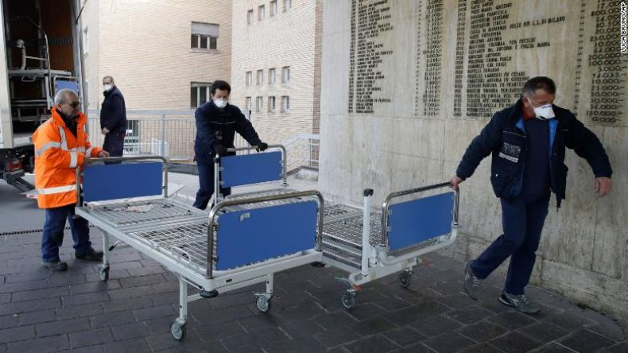
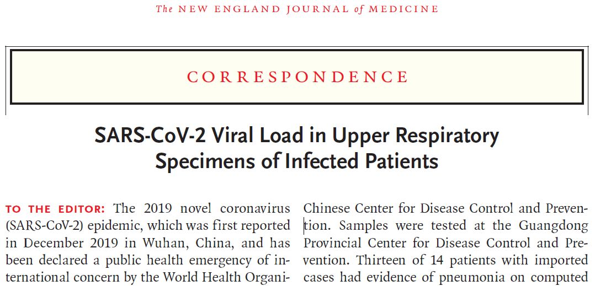
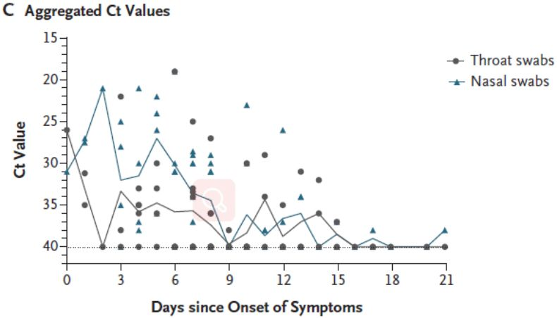

7万例！中国疾控中心发迄今最大新冠病例分析：3019名医护感染，首次描述肺炎发病流行曲线
原文链接 备份链接 2 月 17 日，《中华流行病学杂志》杂志上，中国疾病预防控制中心新型冠状病毒肺炎应急响应机制流行病学组最新发表新冠肺炎研究。 在对截至 2020 年 2 月 11 日中国内地报告的 超过 7 万病例的流行病学特征进行 …

新冠肺炎疫情的发展形势，正在全球范围内急剧变化。
根据中国各省卫健委官方发布消息来看，截至 2 月 24 日上午 9 时，全国已有 23 个省（自治区、直辖市）在 23 日全天的新增确诊病例为零，其中包括北京、湖南、河南、天津等。
而在意大利，出现了该国首个因新冠肺炎死亡的病例，这促使了意大利在 2 月 21 日宣布将关闭北部多个城市的公共场所。截至当地时间 24 日零时，意大利累计确诊病例达到 157 例，为目前欧洲肺炎疫情最严重的国家。现在，意大利北部已有 11 个市镇封城隔离，学校已停课，同时取消了包括狂欢节、足球赛等一系列活动。违反防疫要求者将面临最高 3 个月刑期或最高 206 欧元的罚款。

图 | 意大利科多尼奥的医护人员正在补充新的病床（来源：CNN）
亚洲邻居的疫情也在蔓延，据韩联社报道，截至 2 月 23 日下午，韩国已经新增确诊感染病例 169 宗，总确诊人数达到 602 人，死亡人数则增加至 5 人。韩国总统文在寅 23 日对外表示，将新冠肺炎疫情预警级别从目前的 “警戒” 提升至最高的 “严重” 级别。韩国国务总理丁世均则呼吁，希望全体国民暂停宗教活动等聚集在室内或是在人群密集的户外举行的活动；并表示，政府将根据法律和原则，严厉应对阻碍政府防疫工作、囤积居奇、聚众集会等让他人感到不安的行为。
同样，新冠病毒的感染在日本国内也在扩大。截至 2 月 24 日零时，日本 16 个都道府县累计确诊病例到达 129 人。此外，与中国没有任何关联的感染者也在增加，日本厚生劳动省以及各自治体在持续实施追踪调查。但如果加上停靠在横滨港的 “钻石公主号” 上的确诊病例，因其在 2 月 23 日再增 57 例确诊病例，日本境内累计已有超过 800 人确诊感染了新冠肺炎。
根据外媒报道，新冠肺炎疫情在中东地区的国家中也开始蔓延。伊朗卫生部发言人杰汉布尔（Kianush Jahanpur）在 2 月 23 日宣布，伊朗当日新增 15 例新冠肺炎确诊病例，总病例数达到 43 例，其中已有 8 人死亡。为防止疫情进一步扩散，伊朗政府已下令关闭包括德黑兰省在内的 14 个省的多所学校，同时暂停举行文化与体育活动。伊朗卫生部同时呼吁民众暂停在重灾区库姆的所有宗教集会。作为什叶派圣城之一，库姆每年都会涌入大量朝圣者。
此外，新冠病毒的蔓延范围已抵达阿联酋、以色列和黎巴嫩。阿联酋卫生部在 2 月 21 日宣布，一名菲律宾人和一名孟加拉国人感染新冠病毒，使该国感染病例达到 11 例。以色列在 21 日也证实了该国的首个病例，该病患是从 “钻石公主” 号邮轮撤离后乘飞机回到以色列的。黎巴嫩则因一名从伊朗返回的人确诊而成为中东地区又一受到疫情袭击的国家。
上周五，世卫组织警告称 “遏制新型冠状病毒全球爆发的机会窗口正在缩小”；同日，美国疾控中心（CDC）也发出警告，表示新型冠状病毒“极有可能” 在美国蔓延。CDC 国家免疫和呼吸疾病中心主任南希 · 梅森尼尔博士（Nancy Messonnier）对记者表示，美国卫生官员正在为冠状病毒 “大流行” 做准备。
图 | 南希 · 梅森尼尔博士（来源：globalepidemics）
她说：“到目前为止，我们还没发现病毒在美国社区中蔓延，但很有可能甚至最终确实会发生这种情况。当下我们的目标仍是控制病毒在美国的传播速度，这将为我们赢得更多的时间，以便为更多的病例和可能的持续传播做好准备。”最后，她补充道：“如果那一天到了，我们也必须像中国一样关闭学校和企业。”
新冠病毒不像非典，更像流感？

此前，就有传染病专家预测过此次疫情的一种未来发展可能：新型冠状病毒可能不会消失，或将成为又一种常见病毒。
中国工程院副院长、呼吸与危重症医学专家王辰也在央视的采访中表示：“我们可能要做好与新冠病毒长期共存的准备，新冠病毒有可能转成慢性的，像流感一样长期在人间存在的病。这种可能性是完全存在的，对此我们要做好准备。”
一篇近日发表在《新英格兰医学杂志》（_The New England Journal of Medicine，NEJM_）的文章也给这种观点提供了支持，该研究首次揭示了患者出现症状后新冠病毒的病毒载量动态变化。其研究结果或可推测，此次新型冠状病毒在人体内的变化更接近流感，而非与其病毒结构更像的 SARS。

图 | 论文截图（来源：NEJM）
该研究由广东省疾病预防控制中心、中山大学附属第五医院、香港大学的学者联合完成，研究人员监测了广东省珠海市的 18 例确诊病患（9 名男性、9 名女性，中位年龄 59 岁，年龄范围 26~76 岁）上呼吸道样本中的新冠病毒载量，并分析了病毒载量与疾病进展后的关系。
研究样本中包括位于两个家庭聚类中 4 例继发感染的患者，其中 1 名从未出现症状的患者与已知确诊病例的患者有过密切接触，因此受到监测。研究人员一共分析了 72 个鼻拭子（从中鼻甲和鼻咽采样）和 72 个咽拭子，每位患者连续 采样 1~9 次；所有患者在研究过程中均使用聚脂棉签。

图 | 病毒载量：图 A 显示了 Orf1b 在逆转录酶 - 聚合酶链反应（RT-PCR）分析中的周期阈值（Ct）值，该阈值是在从 14 例输入病例和 3 例继发病例的鼻拭子样本中检测到的；图 B 显示了喉部拭子的 Ct 值（来源：NEJM）
研究人员分析了从 17 例有症状患者处获得的鼻拭子和咽拭子样本中的病毒载量与症状发作日的关系。他们发现，在病患有症状发作后不久就会检测到较高的病毒载量（与 Ct 值成反比），其中鼻子中的病毒载量要高于咽喉中的。通过分析，研究人员认为感染新冠病毒的患者的病毒核酸脱落模式与 4 型流感患者相似，并且似乎与非典时期感染 SARS 的患者不同。
此外，研究发现从无症状患者的样本中检测到的病毒载量与有症状患者很接近，这表明了无症状或轻度症状患者都具有传播潜力，并且在感染早期就可能拥有较强的传染性。同时，研究人员也建议相较于当年对非典的防控策略，如今要做出一定改变，加强对新冠肺炎患者的早期诊断和隔离。因为，SARS 病毒的传播主要发生在发病后的数天，并且在发病早期呼吸道中的病毒载量并不多，当有症状出现后约 10 天左右才会达到病毒载量的峰值。而新型冠状病毒是不同的，从很早期就需要谨慎对待。

图 | 病毒载量与症状发作日的关系（来源：NEJM）
但在文章最后，研究人员也强调了，新型冠状病毒载量与可培养病毒之间的关系还需要更多的研究来分析。同时，有部分无症状和轻症患者，在至少 5 天的时间内，都可在其口咽部样本中检测到的病毒 RNA，而这表明研究团队需要更多、更好的数据来进一步确定病毒的传播动态，以便能够筛选出能为研究实践提供有效信息的样本。
环球同此凉热？
早前由于疫情的传播，偏见与歧视在个别国家的某些角落同样开始蔓延。而当中国疫情逐步得到控制，其他国家疫情在快速扩散时，关于 “倘若新冠病毒在全球流行，中国之前的努力是否会白费” 的议论也跃然于网上。
客观来看，影响是会有的。此次传染性如此之强的新冠病毒让 “人类命运共同体” 这一精神得到了极大体现，中国领导人习近平总书记在给美国盖茨基金会联席主席比尔 · 盖茨的回信中指出，“人类是一个命运共同体。战胜关乎各国人民安危的疫病，团结合作是最有力的武器。”
同样，世卫组织总干事谭德塞在媒体会上也表示过：这次疫情在多方面考验着我们。它是对全球政治团结的考验，考验世界能否团结起来与一个跨越国界和意识形态的共同 “敌人” 作战；也是对全球金融团结的一次考验，考验世界是现在向抗击疫情投入资金，还是因投入不够而在以后为应对其后果付出更多资金；最后，还是对全球科学团结的一次考验，考验全世界科学界能否团结起来为共同的挑战找到答案。

图 | 世卫组织总干事谭德塞（来源：Twitter）
目前，全球已有多家医药公司投入到疫苗等药物的研发测试之中。同样，众多科研人员也在努力地对此次疫情进行多角度的分析研究。而对于大众来说，在社会逐步复工、恢复常态化的时期，需要认清一个客观事实：防疫的形势仍然很严峻，稍不注意，一个传播者就可能导致周边一群人被感染；同样，疫情严重地区的医护人员压力依然巨大。
所以，复工的这一时刻正是防疫的关键时刻，长期的社会舆论氛围和媒体报道或许让许多关注疫情的人已经进入精神上的“疲劳期”，但这并不意味着人们可以不加考虑和防护地出去逛街、约会或者聚餐。我们不能把每天看到的疫情统计简简单单看作成数据，尤其是死亡人数。谭德塞说过：“我们必须记住，这些是人，不是数字。”
希望大家可以做到对自己负责、对他人负责，尽量减少非必要的接触，更要避免非必要的聚集。
-End-
参考：
https://www.nejm.org/doi/full/10.1056/NEJMc2001737
https://www.1011now.com/content/news/UPDATE-CDC-on-coronavirus-health-emergency-568112081.html
https://news.ltn.com.tw/news/world/breakingnews/3077448
https://cn.nikkei.com/politicsaeconomy/politicsasociety/39507-2020-02-24-01-20-31.html

原文链接 备份链接 2 月 17 日，《中华流行病学杂志》杂志上，中国疾病预防控制中心新型冠状病毒肺炎应急响应机制流行病学组最新发表新冠肺炎研究。 在对截至 2020 年 2 月 11 日中国内地报告的 超过 7 万病例的流行病学特征进行 …
原文链接 备份链接 市场反馈认为，公共卫生事件对经济的影响有限；在应对疫情的关键时刻，政治和金融市场应对疫情展示出截然不同的态度 文 |《财经》特派记者 金焱 发自华盛顿 编辑 | 苏琦 2月11日，世界卫生组织通过社交媒体推特发布其确定 …
原文链接 备份链接 疫情发展 1.湖北卫健委：不允许核减已确诊病例。2月21日举行的湖北疫情防控新闻发布会上，湖北卫健委副主任涂远超表示，明确要求对已确诊的病例不允许核减，已核减的必须全部加回。此前，由于统计标准的一再变化，黄石、天门等多 …
原文链接 备份链接 截至目前，还没有证据表明，此次新冠病毒疫情像SARS那样出现超级传播者事件，但医务人员感染以及防护失败的具体原因仍有待深入调查 文 |《财经》记者 信娜 辛颖 王小 编辑 | 王小 “虽然新型冠状病毒具有高度传染性， …
原文链接 备份链接 英国“三号患者”史蒂夫·沃尔什 图片来源：Servomex 记者：潘金花 “ 周二，英国疑似“超级传播者”沃尔什发表声明说，自己已经完全康复。他感谢了朋友、家人与同事，也希望媒体能够尊重他们的隐私。 ” 上周四，英国确 …